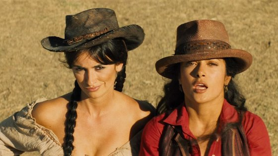

1. Життєпис акторки
Са́льма Ха́йєк Хіме́нес-Піно (ісп. Salma Hayek Jiménez, Spanish: ['salma 'xaʝek], нар. 2 вересня 1966) — популярна мексиканська та голлівудська кіноакторка, режисерка та продюсерка. Друга мексиканка, яка отримала номінацію на премію «Оскар» (2003). Відома феміністичними поглядами та благочинною діяльністю.
Дитинство
Сальма Хайєк Хіменес народилася в мексиканському місті Коацакоалькос, штат Веракрус 2 вересня 1966 року. Її мати, Діана Хіменес Медіна, була оперною співачкою мексикансько-іспанського походження, а батько, ліванець Самі Хайєк Домінгес, - керуючим нафтовою компанією, який одного разу навіть балотувався на пост мера Коацакоалькосі.
Сальма Хайєк виховувалася в забезпеченій та дуже побожній сім'ї. У 12-річному віці дівчинку відправили вчитися в католицьку школу-інтернат для дівчаток при монастирі в Луїзіані, США. Поки Сальма проходила навчання, лікарі поставили їй діагноз «дислексія», що означало, що школярка не могла повною мірою опанувати навичками читання та письма. Зате вона робила успіхи в спортивній гімнастиці.
Акторкою Сальма захотіла стати ще в дитинстві, коли вперше подивилася фільм «Віллі Вонка і шоколадна фабрика» (1971) з Джином Уайлдером в головній ролі. Але прийти до мрії їй вдалося не відразу - спочатку дівчину виключили з католицької школи, потім вона вступила на факультет міжнародних відносин в Іберо-Американський університет і повернулася в Мехіко. Тільки після здобуття вищої освіти вона відчула в собі сили всерйоз зайнятися акторською майстерністю.
Акторська кар'єра
1. У Мексиці
У віці 23 років Хайєк отримала головну роль в успішній мексиканській теленовелі «Тереза» (1989), завдяки якій вона заробила статус національної зірки. Пізніше, в 1994 році Сальма знялася у фільмі «Алея чудес», який отримав більше премій, ніж будь-який інший фільм в історії мексиканського кіно. За свою гру вона отримала номінацію на головну кінопремію Мексики — «Аріель».
2. Початок кар'єри у Голлівуді
До Америки актриса прибула «як нелегальна іммігрантка». Серед її залицяльників ходили чутки про те, що вона виїхала з Мексики у зв'язку з таємним романом з президентом країни (щоб уникнути гніву його дружини). Не дивлячись на погане знання англійської мови, в 1991 році Хайєк переїхала до Лос-Анджелеса та почала навчання акторської майстерності у самого відомого театрального педагога Америки - Стелли Адлер.
Хайек була сповнена ентузіазмом зніматися в Голлівуді, проте швидко зрозуміла, що мексиканкам місцеві режисери пропонують переважно однотипні ролі вульгарних коханок або повій. На початку своєї кар'єри їй доводилося грати і тих, і інших в різних телесеріалах.
В одному з іспаномовних ток-шоу Сальма поскаржилася на таку розстановку сил в американській кіноіндустрії. У цій передачі її помітив режисер і продюсер Роберт Родрігес. Юна красуня підкорила його не тільки зовнішністю, але і дотепністю. Для Сальми знайомство з Родрігесом стало щасливим квитком до Голлівуду, адже він запросив Хайєк на зйомки в бойовику «Відчайдушний» з Антоніо Бандерасом.
Роль Кароліни - дівчини головного героя фільму - в 1995 році принесла Хайєк популярність в США і світі та привернула увагу голлівудських продюсерів. Сальму відразу запросили на зйомки «Маски Зорро», знову з Бандерасом. Однак, коли Родрігес покинув режисерське крісло, Хайєк відмовилася від пропозиції.
В цьому ж році Родрігес зняв Сальму в невеликій ролі в культовому бойовику «Від заходу до світанку» з Джорджем Клуні і Квентіном Тарантіно.
Наступним успішним фільмом актриси стала зворушлива романтична комедія «Поспішиш, людей насмішиш» (1997), де її партнером став Меттью Перрі, вже відомий на той момент за роллю Чендлера в серіалі «Друзі».
У 1999 році Сальмі дістається головна роль в крупнобюджетній стрічці «Дикий, Дикий Вест», де вона зіграла з Уіллом Смітом. Далі послідувала другорядна роль в комедії Кевіна Сміта «Догма» про нові пригоди Джея і Мовчазного Боба, а також двох занепалих архангелів, яких зіграли Метт Деймон та Бен Аффлек.
У 2003 році Сальма повторила свою роль з «Відчайдушного», знявшись у фільмі «Одного дня в Мексиці» — завершальній частині трилогії про музиканта.
3. Режисерка, продюсерка та акторка
Приблизно у 2000 році Сальма Хайєк заснувала власну продюсерську кінокомпанію під назвою «Ventanarosa» та зайнялася випуском фільмів і телевізійних проектів. Її першим фільмом стала екранізація культової повісті колумбійського письменника Габріеля Гарсіа Маркеса «Полковнику ніхто не пише». Картина брала участь у Каннському кінофестивалі, отримала номінацію «Гойя» та премію фестивалю незалежного кіно «Санденс» в 2000 році. Сама актриса виконала у фільмі одну з головних ролей. Крім того, цей фільм був обраний Мексикою для представлення на премію «Оскар» в номінації «Кращий зарубіжний фільм».
У 2002 році вийшов фільм «Фріда» Джулії Теймор, що був присвячений дивовижній долі та творчості мексиканської художниці Фріди Кало. Сальма була сопродюсером фільму, а також зіграла головну роль, що стало беззаперечно проривом в її акторській кар'єрі. За цю роль, яку Хайєк виконала з повною самовіддачею, вона була номінована на «Оскар» як краща актриса першого плану. Це зробило її, разом з Кеті Хурадо і Адріаной Барраса, однією з трьох мексиканських актрис, які будь-коли номінувались на цю винагороду.
Завдяки участі Хайєк у цьому проєкті вдалось зібрати дійсно зірковий акторський ансамбль з Альфреда Моліни, Антоніо Бандераса, Ешлі Джадд, Джеффрі Раша, Едварда Нортона і Валерії Голіно. Але цією роллю, про яку мріяли Мадонна і Дженніфер Лопес, вона затьмарила усіх та навіть виконала у фільмі декілька пісень.
У 2003 році Хайєк зняла фільм «Диво Мальдонадо» для кабельної мережі Showtime, за який отримала премію «Еммі» в номінації «видатна режисура дитячої, молодіжної або родинної програми».
У грудні 2005 року Хайек зняла музичний кліп для співця Прінса під назвою «Te Amo Corazon» («I love you, sweetheart»), у якому зіграла її подруга Міа Маестро.
У вересні 2006 року Сальма Хайєк стала виконавчим продюсером телесеріалу «Страшко Бетті» («Ugly Betty»), що транслювався по всьому світу з 2006 по 2010 роки. Хайєк з'явилась в «Страшко Бетті» в ролі Софії Рейес, редакторки журналу. Також у неї було камео актриси в теленовелі в рамках шоу. У 2007 році серіал отримав премію Золотий глобус за «Кращий комедійний серіал». А роль Софії принесла Хайек номінацію на премію Еммі.
Варто згадати такі успішні і якісні роботи акторки як кримінальний бойовик з Пірсом Бронсаном «Після заходу» (2004), мелодрама з Коліном Фаррелом «Запитай у пилу» (2006), трилер з Джаредом Лето і Джоном Траволтою «Самотні серця», а також комедійний вестерн «Бандитки» (2006), де Сальма зіграла зі своєю подругою Пенелопою Крус. Глядачі були в захваті від витівок двох відчайдушних дівчат.
У 2010-і роки Сальма Хайєк багато знімалася в розважальних високобюджетних картинах, черговий раз продемонструвала свій комедійний талант в «Однокласниках» (2010) з Адамом Сендлером і Крісом Роком, зіграла з Джоном Траволтою і Блейк Лайвлі в бойовику Олівера Стоуна «Особливо небезпечні» (2012). У наступні декілька років акторку можна було побачити в картинах: «Як займатися любов'ю по-англійськи», «Страшні казки», «Охоронець кілера». У останньому її партнерами стали Райан Рейнольдс і Семюел Л. Джексон. Окрім того, Сальма Хайєк озвучила ролі у мультфільмах «Шрек», «Кіт у чоботях», «Пророк», «Повний расколбас».
2. Особисте життя
Сальма Хайєк протягом чотирьох років зустрічалася з актором Едвардом Нортоном, відносини з яким зав'язалися в 1999 році, а потім пробула рік у відносинах з іншим актором - Джошем Лукасом.
Після розриву відносин з ним в 2004 році Сальма збиралася стати дружиною мільйонера Франсуа Анрі Піно (власника мережі відомих модних будинків - Yves Saint Laurent, Gucci, який входить в сотню найбагатших людей світу), проте в липні 2008 року пара оголосила про розрив. У вересні 2007 року у пари народилася донька, яку назвали Валентина Палома Піно. Дівчинка після розриву відносин між батьками залишилася разом з мамою. Втім, порізно пара прожила недовго. У квітні 2009 року в Венеції, в історичному театрі Ла Феніче, Сальма Хайєк все-таки вийшла заміж за Франсуа Анрі Піно.
Найкращою подругою Сальми є іспанська актриса Пенелопа Крус, також вона дружить з Ешлі Джадд і Валерією Голіно. Незважаючи на дислексію, актриса вільно говорить іспанською, англійською, арабською та португальською мовами.
3. Нагороди та звання
- Лауреатка премії Glamour «Жінка року» (жовтень, 2001)
- Лауреатка премії Гільдії продюсерів Америки (2003)
- Лауреатка премії «Художник року» Гарвардського фонду (лютий 2006)
- Названа журналом Time одній з «25 найвпливовіших латіноамеріканцев року» (2005)
- Лауреатка премії «Women in Film Lucy Award» в знак визнання високої якості та новаторства її роботи (2008)
- Лицарка (шевальє) Національного ордена Почесного легіону (Франція, 2011)
- Лауреатка премії «Еммі» за режисуру ТБ-фільму «Диво Мальдонадо» (2004)
- Лауреат премії імені Франки Соццані Венеціанського кінофестивалю (2018)
4. Фільмографія
З повною фильмографією акторки можна ознайомитись за посиланням